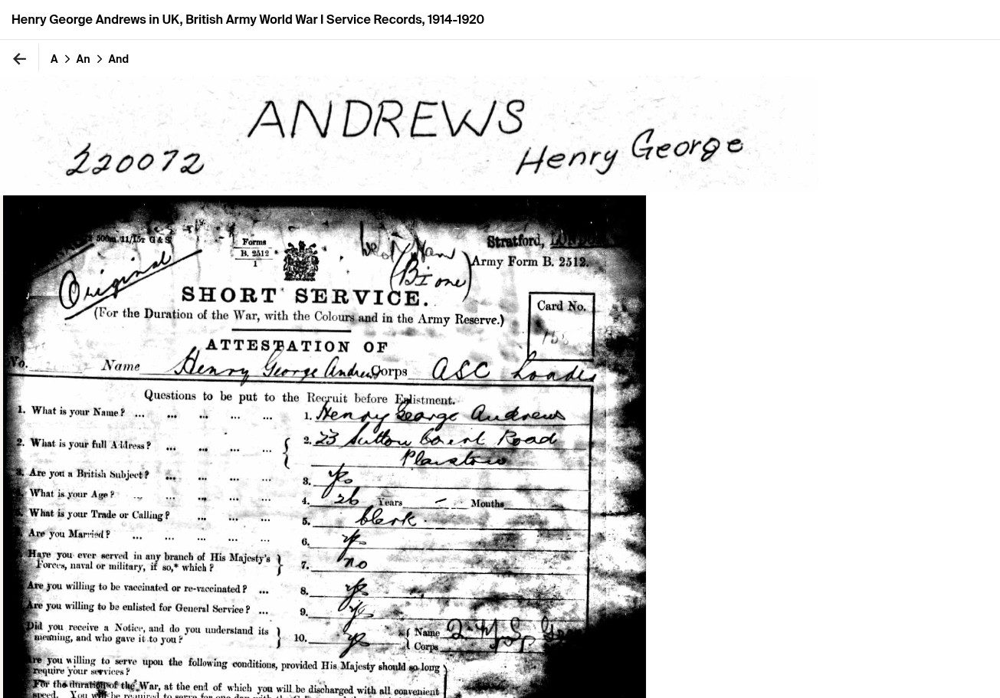
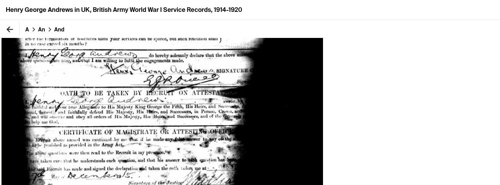
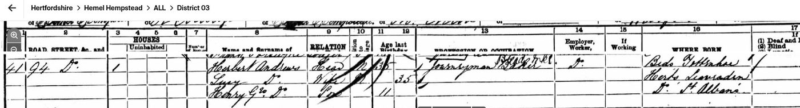
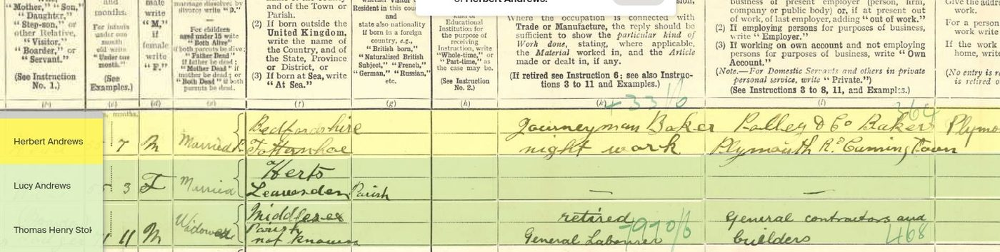
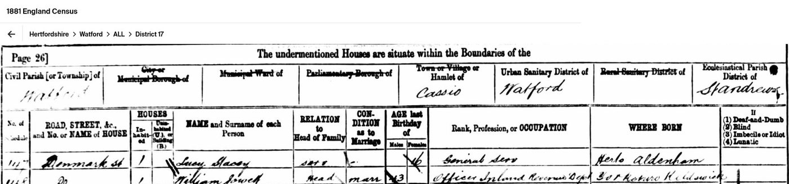
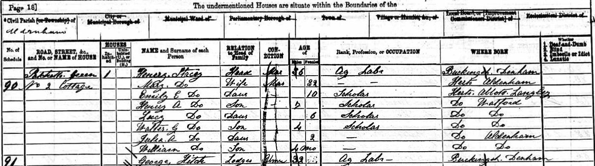
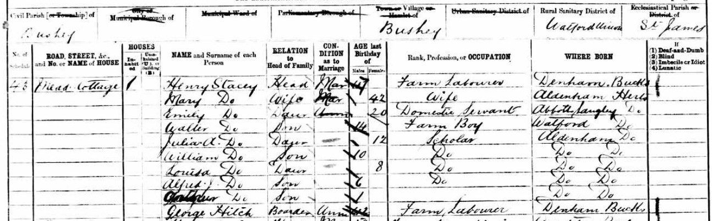
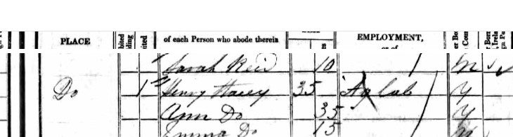

Andrews, Stacey and Walter
Henry George Andrews, Ron's father, was the only child of a Totternhoe baker and a Stacey from Leavesden. The line runs back through Aldenham, Bushey, Denham and Letchmore Heath.
Henry George, Herbert and Sidney
Henry George Andrews was born at St Albans in April 1889 and baptised at St Albans Abbey on 9 June 1889. The birth index, June quarter 1889, St Albans, volume 3a, page 559, names his mother as Stacey. The 1939 Register probably gives the day as 8 April. On 18 April 1915, aged 25, he married Rosina Maud Cousins at St Andrew's, Plaistow. In 1911 he was a sawyer's labourer at Canning Town. In 1921 he was a dock labourer for the Port of London Authority at the Royal Albert Docks. In 1939 he was an explosive worker at the Royal filling factory, Woolwich. On 7 December 1915, less than eight months after his wedding, Henry George Andrews attested at Stratford for the Army Service Corps, signing on for the duration of the war. He gave his address as 23 Sutton Court Road, Plaistow, his age as 26 and his trade as clerk, and said he was married. His number was 220072, later written T4/220072. His medal card shows that he received the British War Medal and the Victory Medal. The rest of his service file is still being read and should say where he served. He, Rosina and their son Sidney George were killed at 23 Sutton Court Road, Plaistow, on 19 April 1941.






The war-dead records name the house: 23 Sutton Court Road, Plaistow, in the West Ham county borough, on 19 April 1941. Henry was 52, Rosina 59 and Sidney 18. The wedding album says East Ham, which is the next borough. The war-dead records say Plaistow. Sidney was born in the West Ham district in the spring of 1923, volume 4a, page 150, mother Cousins, and in 1939 he was a junior clerk at a hardwood merchant.
Herbert William, the elder brother, was born in the West Ham district in 1916, volume 4a, page 180. He was 4 in 1921 and, in 1939, an explosive worker at Woolwich with his father. He probably married Christina M. Knight in 1940, in the East Ham district. Their daughter is Christine Ellis, Amanda's first cousin. His death has not been found, so the exact day of birth on the 1939 Register is not published. Ronald's own birth is not published here.
Herbert Andrews and Lucy Stacey








Herbert Andrews
He was 5 at Totternhoe in 1871, son of George and Alice. At 15 he was probably a page in a household at Wimbledon. On 17 May 1888, aged 22, he married Lucy Stacey at Bushey. His father is named as George Andrews. He was a journeyman baker: at Hemel Hempstead in 1901, at Canning Town in 1911, and on night work for a Canning Town bakery in 1921, when he and Lucy were at Plaistow. In 1911 Henry, 21, worked as a sawyer's labourer at a saw mill and lived with his parents at 40 Fisher Street, Canning Town. His father Herbert, 45, was a journeyman baker; his mother Lucy was 46. The form says they had been married 23 years and had one child, so Henry George was their only child. In 1939 he was a widower and a retired baker at West Ham. He probably died in the March quarter of 1951 in the Essex South Western district, volume 5a, page 209, aged 84. That age is about a year younger than the 1939 birth date.
Lucy Andrews, nee Stacey
Born in the June quarter of 1865, Watford Union, volume 3a, page 333, mother's maiden name Walter. The censuses give Watford and, in 1921, Leavesden. She was 6 at Aldenham in 1871. In 1881 Lucy Stacey, 16, born at Aldenham, was a general servant in the household of Francis Miller in Denmark Street, Watford. She probably died in the September quarter of 1932, West Ham, volume 4a, page 153, aged 67.
George and Alice, of Totternhoe

George Andrews was an agricultural labourer, born at Totternhoe about 1843. In 1871 he was 28, with Alice, 33, also born at Totternhoe, and sons Herbert and Albert. Elizabeth Field, aged 65 and born at Stanbridge, was in the household and described as mother. By 1881 the family was at Aldenham. George was 38. With them were Alice, Albert, Isabell, Rose and Mary, and Elizabeth Field, now described as his mother-in-law. Alice's maiden name was probably Field, and Elizabeth was probably her mother, born about 1805 or 1806.
The Staceys and the Walters







Henry Stacey, Lucy's father, was baptised at Denham, Buckinghamshire, on 16 March 1834, son of Henry and Ann. He was 7 at Denham in 1841. On 5 June 1858 he married Mary Walter at Leavesden. He gave his age as 24, a little older than the baptism. He was a farm labourer. In 1861 he and Mary, with their first child Emily, were visiting at Abbots Langley. In 1871 they were at Aldenham, and in 1881 and 1891 at Bushey.
His parents, Henry and Ann, were agricultural labourers at Denham. The 1841 household includes Emma, Stephen, Henry, Mary, Sally, Maria and George. They were probably born about 1801 to 1806. The 1851 census gives the elder Henry's birthplace as Chalfont.
Mary Stacey, nee Walter, was baptised at Aldenham on 4 November 1838, daughter of Robert and Mary Walter. In 1841 she was 2, at Letchmore Heath, with her parents and four older brothers and sisters: Rachel, Rebecca, James and Robert. Robert was an agricultural labourer, aged 32. The marriage age of 21 is a little high. Lucy's birth index names the mother as Walter, so this Mary was her mother.
The Cousins side of Ron's family, including Auntie May, is on the Cousins page.